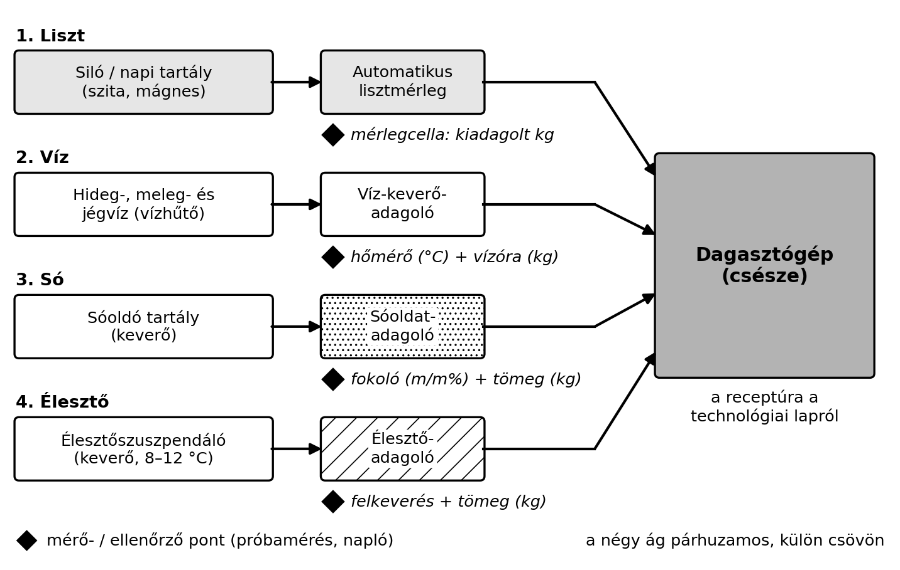

Hajnali kenyérgyártás előtt a pék a dagasztógép mellett áll, és a technológiai lap szerint be kell adagolnia 48 kg lisztet, 23 kg vizet, 3,84 kg 25 m/m%-os sóoldatot (ebben 0,96 kg só, vagyis a liszt 2,0%-a) és 2,4 kg élesztőszuszpenziót (a sóoldat és a szuszpenzió vizét a tervező már levonta a dagasztóvízből). Ha a sóoldat-adagoló 15 százalékkal kevesebbet adagol, a tészta sótlan lesz, az erjedés felgyorsul, a kenyér héja fakó és a bélzet ragacsos lehet. Ha a víz hőmérséklete 2 °C-kal hidegebb a tervezettnél, a tészta hőfoka is alacsonyabb lesz, ezért a kelesztés lassul, és a napi gyártási menetrend felborul. Ebből a fejezetből megtanulod, hogyan működnek és hogyan kell kezelni azokat a berendezéseket, amelyek a liszt, a víz, a sóoldat és az élesztő pontos adagolását végzik.
Képzeld el a pékség nyersanyag-előkészítő sarkát. A silóból lefelé vezető cső egy automatikus lisztmérlegen halad keresztül, amely minden dagasztáshoz pontosan kiméri a lisztadagot. Mellette egy hőszigetelt tartályban kevert vizet készítenek: a gép hideg és meleg vizet kever, majd a beállított hőmérsékletű vizet engedi a dagasztóba. A fal mellett egy sóoldó tartály áll, benne keverőlapát, alatta csővezeték és adagolószelep. Egy másik kisebb tartályban élesztőszuszpenziót kevernek; ezt szivattyú nyomja az adagolóhoz. Mindegyik berendezéshez tartozik mérő- vagy ellenőrző pont, mert a pontatlan adagolás nem csak minőségi hibát, hanem élelmiszer-biztonsági kockázatot is okozhat.
A nyersanyagok tehát nem egymás után, hanem négy párhuzamos ágon jutnak a dagasztógépbe: (1) a liszt a silóból vagy a napi tartályból az automatikus lisztmérlegen át, (2) a víz a hideg-, meleg- és jégvíz-bemenetről a víz-keverő-adagolón át, (3) a sóoldat a sóoldó tartályból a sóoldat-adagolón át, (4) az élesztőszuszpenzió a szuszpendálóból az élesztő-adagolón át. Mindegyik ágnak saját mérő- vagy ellenőrző pontja van.

Az ábrán a fekete rombuszok jelölik, hol ellenőrzi a pék az adagolást (próbamérés, napló). Tipikus félreértés, hogy a víz, a sóoldat és az élesztő „egymás után”, ugyanazon a csövön halad: valójában mindegyiknek külön csöve és adagolója van, ezért egy ág hibája (például eltömődött hidegvízszűrő) csak a saját nyersanyagát rontja el – és csak a saját ellenőrző pontján derül ki.
Definíció. Az üzemi mérleg olyan, a pékségben használt mérőeszköz, amely nyersanyagok, félkész- és késztermékek tömegének meghatározására szolgál. Az automatikus lisztmérleg a liszttároló és -szállító rendszer részét képező, vezérlővel összekötött tömegmérő, amely a dagasztásonkénti lisztmennyiséget önállóan kiméri.
Szabály. A mérleget mindig az adott mérési tartománynak és pontossági igénynek megfelelően válaszd ki. Gyártásközi mérésre általában 0–60 kg, 0–150 kg vagy nagy tételnél 0–300 kg méréshatárú mérleg szolgál. Az adagolási pontosságot gyakran a legkisebb kimérhető tömeg jellemzi; ez a mérleg felbontásával függ össze.
Előírás. A magyar mérésügyi szabályozás szerint (1991. évi XLV. törvény a mérésügyről – ellenőrizendő: hatályos szöveg) a kereskedelmi ügyletben, valamint hatósági célra használt mérlegek hitelesítése kötelező. A pékségi nyersanyag-átvételnél és a termék kiszerelésénél ezért hiteles mérleget kell használni, a hitelesítési jelet és a határidőt ellenőrizni kell.
Az automatikus lisztmérleg gyakran egy mérlegcellás tartályból vagy mérőcsigából áll. A vezérlő a technológiai lapról kapott lisztmennyiség alapján megnyitja a siló alatti adagolót, a liszt a mérőtartályba áramlik, a tömegjelet a mérlegcella továbbítja, és a kívánt érték elérésekor a betöltő szerkezet zár. A kimért lisztet ezután pneumatikus vagy gravitációs úton továbbítják a dagasztógépbe.
Gépbiztonság. Az automatikus lisztmérleget és a siló alatti adagolót csak betanítás után, felügyelettel kezeld. A mérlegcellás tartályoknál üzem közben tilos a nyílásokon benyúlni, a lezárt fedeleket megbontani vagy a mérőrendszert megkerülni. A pneumatikus szállítórendszer nyomás alatt állhat, ezért a csőszakaszok oldása előtt a nyomást meg kell szüntetni és a berendezést le kell állítani (ellenőrizendő: üzemi utasítás).
Higiénia. A lisztmérleg belső felületei élelmiszerrel érintkeznek, ezért rendszeres tisztítást és szárazon tartást igényelnek. A lisztmaradék a mérőtartályban csomósodhat, penészedhet, és rovarkártevőket vonzhat, ezért a kiürítést naponta ellenőrizzük.
Definíció. A víz-keverő-adagoló olyan berendezés, amely hideg és meleg vizet a beállított arányban kever, a keverék hőmérsékletét méri, és a dagasztáshoz előírt mennyiségű, adott hőmérsékletű vizet enged a dagasztóba. A vízhűtő a hálózati víz hűtésére szolgál; lehet egyszerű hűtőaggregátorral szerelt tartály vagy jégvíz-előállító, amely 1–4 °C hőmérsékletű vizet biztosít a keverő számára (ellenőrizendő: a berendezés gépkönyvének teljesítménye).
A vízkeverő beállítása két dolgot jelent: a víz hőmérsékletét és a víz tömegét. A víz hőmérsékletét a tésztahőmérséklet-számításból kapjuk meg, amelyet Tésztahőmérséklet és dagasztóvíz számítása alfejezet tárgyal. A keverő a hideg és meleg ágat a hőmérséklet-érzékelő jele alapján szabályozza. A vízmennyiség beállítása leggyakrabban térfogat- vagy tömegmérésen alapul: a gép vízórával vagy mérlegcellás víztartállyal méri a kiadagolt mennyiséget.
Gyakorlat. A víz-keverő-adagolót a kívánt mennyiségre és hőmérsékletre így állítjuk be:
Hiba. Gyakori hiba, hogy a kezelő csak a kifolyó víz hőmérsékletét nézi, de nem méri a tömegét. Ha a vízmérő vagy a mérlegcella hibás, a tésztakitermelés (TA) eltér a technológiai laptól, ezért a tészta állaga vagy a termék súlya nem megfelelő.
A hűtött víz a nyári melegben nélkülözhetetlen. A jégvíz-előállító a vizet 1–4 °C-ra hűti, és a keverő a meleg csapvízzel keverve éri el a kívánt hőmérsékletet. A hűtőberendezés hűtőközege zárt rendszerben kering; a feltöltést, karbantartást csak képesített szakember végezheti.
Gépbiztonság. A víz-keverő és hűtő villamos részegységeket tartalmaz. A burkolatot csak leállított, áramtalanított állapotban szabad eltávolítani. A forró víz csatlakozásainál fennáll a forrázás veszélye, ezért a csővezetékek hőszigetelését ellenőrizni kell, és a tömítetlenséget azonnal jelenteni. A jégvíz-rendszerben a nyomás alatti alkatrészeket ne bontsd meg, ha nem vagy arra kiképezve.
A sóoldatot leggyakrabban központi sóoldó tartályban készítik. A tartályban só és víz összekeverésével tömény oldatot állítanak elő, amelyet ezután az adagoló csövön keresztül a dagasztógépbe nyomnak.
Definíció. A sóoldó olyan edény, amelyben a kristálysó és a víz összekeverésével sóoldatot készítenek. A sóoldat-adagoló az oldatot a receptúra szerint kiméri, és a dagasztáshoz adagolja.
A só oldhatósága vízben hőmérsékletfüggő. 20 °C-on 100 g víz körülbelül 36 g sót old fel, ami telített oldatot ad (a só tömegtörtje a telített oldatban kb. 26,4 m/m%; ez tanulási érték, a gyakorlatban a pontos érték az üzemi mérésen alapul). A pékségi gyakorlatban gyakran 25 m/m%-os sóoldatot készítenek, hogy a só ne váljon ki hidegebb környezetben, és az oldat sűrűsége jól mérhető legyen (ellenőrizendő: üzemi technológiai utasítás). A sóoldat töménységét fokolóval lehet ellenőrizni.
Technológia. A sóoldat készítése és adagolása:
Számítás. 100 kg 25 m/m%-os sóoldat elkészítéséhez só és víz szükséges, mert a tömegtört a só tömegének és a teljes oldat tömegének hányadosa.
Gépbiztonság. A sóoldó keverője forgó lapáttal rendelkezik. A tartály fedelét, a keverőt működés közben tilos kinyitni vagy megbontani. A tisztítást csak a keverő leállítása, áramtalanítása és a forgó rész megállása után végezd. A só nem veszélyes vegyszer, de a szembe kerülő tömény sóoldat kellemetlen; viselj védőszemüveget, ha nagy mennyiséggel dolgozol.
A két berendezés felépítését a következő vázlat mutatja. A víz-keverő-adagolón a hideg- (1), meleg- (2) és jégvíz-bemenet (3) a keverőszelepbe (4) fut; a hőmérséklet-érzékelő (5) és az átfolyásmérő (6) jele a kezelőpanelre (7) kerül, ahol a technológiai lap szerinti hőmérsékletet és mennyiséget beállítod; a víz a kifolyón (8) át jut a csészébe. A melegvíz-ágon (9) forrázásveszély van. A sóoldón a sót és a vizet a betöltőnyíláson (11) át, működő keverő (12) mellett adagolod; az oldat a szűrőn (13) át az adagolószivattyúhoz (15) jut, a töménységet a mintavételi ponton (14) fokolóval ellenőrzöd.
Figyeld meg, hogy a beállított hőmérsékletet az érzékelő (5) méri, a mennyiséget az átfolyásmérő (6) – ezért kell a próbamérésnél mindkettőt külön ellenőrizni. A HTML-változatban a célhőmérséklet csúszkájával kipróbálhatod, mely bemeneti ágak nyílnak és milyen arányban (a keverési szabály a lenti 2. kidolgozott példáé).
Definíció. Az élesztőszuszpendáló olyan tartály vagy készülék, amelyben a sütőélesztőt vízzel elkeverve híg szuszpenziót (élesztőtejet) készítenek. Az élesztő-adagoló ebből a szuszpenzióból méri ki a dagasztáshoz szükséges mennyiséget.
A friss élesztőt vízben elkeverve könnyen, csővezetéken továbbítható, és egyenletesen oszlik el a tésztában. Az élesztőszuszpenzió töménységét úgy adjuk meg, hogy 100 kg szuszpenzió hány kg élesztőt tartalmaz. A gyakorlatban 10–20 m/m%-os szuszpenziót készítenek; a hígabb szuszpenzió jobban szivattyúzható, de több vizet visz a tésztába (ellenőrizendő: üzemi előírás).
Technológia. Az élesztőszuszpenzió készítése:
Higiénia. Az élesztőszuszpendáló és a sóoldó tartály, valamint a csőrendszer élelmiszerrel érintkező felület. Ezeket naponta tisztítani és fertőtleníteni kell. A maradék szuszpenzióban a mikrobák gyorsan szaporodhatnak, ezért a tartályt nem szabad éjszakára teli hagyni. A tisztítószert élelmiszertől elkülönítve tárold, és a biztonsági adatlap szerint használd.
Gépbiztonság. A szuszpendáló keverőjére, a szivattyúkra és a csővezetékekre ugyanazok a leállítási és áramtalanítási szabályok vonatkoznak, mint a sóoldónál. A szivattyú futása közben a csővégbe nyúlni tilos. A csőrendszer nyomásmentesítését az üzemi utasítás szerint végezd.
A mérések és adagolások pontosságát rendszeresen ellenőrizni kell. A próbaméréshez használj hitelesített mérleget vagy összehasonlító mérési eljárást.
Gyakorlati útmutató: Adagolók pontosságának ellenőrzése próbaméréssel
Cél: Ellenőrizni, hogy a víz-, sóoldat- és élesztő-adagoló a beállított mennyiséget adagolja-e, és az eltérés a megengedett tűrésen belül van-e.
Eszközök és anyagok: - hitelesített digitális mérleg, - mérőedény (pl. 30 kg-os műanyag edény), - hitelesített hőmérő, - fokoló vagy sűrűségmérő a sóoldathoz, - tiszta mintavevő edények, - a technológiai lap a beállított értékekkel.
Higiénia. A mérés előtt moss kezet, viselj tiszta munkaruhát, hajhálót és ékszert ne viselj. A mintavevő edények legyenek tiszták és szárazak. A nyersanyag-mintákat csak élelmiszerrel érintkező edénybe gyűjtsd.
Gépbiztonság. Az edényt leállított adagolónál helyezd a kifolyó alá és vedd el; az adagolást a kezelőpanelről, a védőburkolatok megbontása nélkül indítsd. Az adagolókat úgy kell üríteni, hogy ne legyen szükség forgó részbe nyúlni. A mérés után a gépet az üzemi utasítás szerint vissza kell indítani.
Lépések:
Dokumentálás: A mérési eredményeket, a dátumot, az adagoló azonosítóját és a beállításokat jegyezd fel a műszaknaplóba vagy a gép ellenőrző lapjára. A HACCP-tervben előírt gyakorisággal (például műszakonként vagy naponta) végezd el a próbamérést.
Példa 1: Sóoldat-korrekció számítása
Adott: Van 40 kg 22 m/m%-os sóoldat a tartályban. A technológiai lap 25 m/m%-os oldatot ír elő. Mennyi sót kell még hozzáadni?
Keresett: a hozzáadandó só tömege, .
Megoldás. A jelenlegi oldatban a só tömege:
A végleges oldat tömege a hozzáadott sóval együtt . A 25 m/m%-os összetétel:
Az egyenletet rendezve:
Ellenőrzés: A hozzáadott sóval az oldat tömege 41,6 kg, a só tömege 8,8+1,6=10,4 kg, az arány 25%. ∎
Példa 2: Víz hőmérsékletének keverése
Adott: A dagasztáshoz 26 kg 18 °C-os víz szükséges. Rendelkezésre áll 4 °C-os jégvíz és 30 °C-os meleg víz. Mennyit kell keverni a kettőből?
Keresett: a hideg víz tömege és a meleg víz tömege , ha a keverék tömege 26 kg.
Megoldás. A tömegmegmaradás:
A hőmérséklet-egyensúly (a víz fajhője azonos, ezért a tömeg és a hőmérséklet szorzatainak összege a keverék hőmérsékletét adja):
Az első egyenletből . Helyettesítve:
Így .
Ellenőrzés: A keverék hőmérséklete: , és a tömeg 26 kg. ∎
Ugyanez az eredmény gyorsabban adódik a keverési kereszttel: bal oldalra a két kiinduló értéket, középre a célt írjuk, és átlósan kivonjuk. A jégvízhez a , a meleg vízhez a rész tartozik, így részből 12 kg jégvíz és 14 kg meleg víz kell. Az 1. példa sóoldat-korrekciója ugyanígy számolható: a 22 m/m%-os oldatra , a kristálysóra (100 m/m%) rész jut, tehát 40 kg oldathoz só kell.
A kereszt csak akkor ad értelmes eredményt, ha a cél a két kiinduló érték között van: 4 °C-os és 30 °C-os vízből 2 °C-os víz nem keverhető ki (ehhez jég kell). A HTML-változat kalkulátorában három üzemmód van – vízkeverés, sóoldat-korrekció (túl tömény oldatnál a hozzáadandó vizet is kiszámolja) és élesztőszuszpenzió –, és mindegyik visszaellenőrzi az eredményt.
Példa 3: Élesztőszuszpenzió adagolása
Adott: A dagasztáshoz 2,0 kg friss élesztőre van szükség. Az élesztőszuszpenzió töménysége 15 m/m%. Mennyi szuszpenziót kell adagolni?
Keresett: az adagolandó szuszpenzió tömege .
Megoldás. A tömegtört alapján:
Ellenőrzés: 13,33 kg szuszpenzióban az élesztő tömege , tehát a beállítás helyes. ∎
Egy pékségben a kovászos kenyeret gyártó műszak panaszkodott, hogy a tészta hőmérséklete délelőttönként fokozatosan emelkedik, a kenyerek kelesztési ideje rövidül, a héj színe túl sötét lesz. A hibát először a dagasztóvíz hőmérséklet-érzékelőjére gyanakodtak. A karbantartó megmérte a víz-keverő-adagolóból kifolyó vizet: a beállított 18 °C helyett 21 °C jött ki. A hidegvíz-betáp szűrője részben eltömődött, ezért a gép túl sok meleg vizet kevert. A szűrő tisztítása után a víz hőmérséklete visszaállt. A tanulság: a víz-keverőt nem elég beállítani, a kifolyó vizet minden műszak elején próbaméréssel ellenőrizni kell.
Az adagolók minőségi jellemzője a pontosság, a megbízhatóság és a higiéniai állapot. Az adagolt mennyiséget naponta próbaméréssel ellenőrzik, a sóoldat töménységét fokolóval mérik, a víz hőmérsékletét hitelesített hőmérővel hasonlítják a beállítotthoz. Az adagolókból vett minták érzékszervi ellenőrzése (szín, szag, idegen anyag) minden műszakban történik. A dokumentált eredmények a HACCP-rendszer részeit képezik.
HACCP. Az adagolók pontossága elsősorban minőségi ellenőrző pont (OPRP/minőségi CP): a tűrés (pl. sóoldatnál ±2%, víznél ±1% – tanulási példa, ellenőrizendő: üzemi HACCP-terv) a termékminőséget és a jelölt sótartalmat védi. Élelmiszer-biztonsági veszély a tisztítatlan tartályban elszaporodó mikroba és a tisztítószer-maradvány; allergénkockázat csak akkor van, ha ugyanazon adagolón allergéntartalmú folyadékot (pl. tej, tojáslé) is adagolnak. A monitoring a próbamérés, a helyesbítés pedig a gép kalibrálása vagy az adagoló korrekciója.
Allergén. A sóoldó és az élesztőszuszpendáló alapanyagai önmagukban nem tartalmaznak az 1169/2011/EU rendelet II. melléklete szerinti allergént (ellenőrizendő: a felhasznált adalékanyagokra). Azonban a közös csőrendszeren keresztül más nyersanyag (például tojásos vagy tejes keverék) maradványa keresztszennyeződést okozhat, ezért a tisztítás és az elkülönítés kulcsfontosságú.
Hiba 1: A sóoldat nem keveredik, alján kristály marad. Tünet: a fokoló alacsonyabb töménységet mutat, mint a kívánt. Ok: a keverő nem működik, vagy a sót egyszerre öntötték hideg vízbe. Megelőzés/javítás: a sót fokozatosan, keverés közben adagoljuk; a tartály alját ellenőrizzük, szükség esetén tovább kevertetjük.
Hiba 2: Az adagoló pontatlan, de a kezelő nem ellenőrzi. Tünet: a tészta sótlan vagy túl sós, a vízmennyiség eltér. Ok: a mérőcella nincs kalibrálva, a cső eltömődött, vagy a vezérlő hibás. Megelőzés/javítás: műszakonkénti próbamérés, az eltérés dokumentálása, gépészeti beavatkozás szükség esetén.
Hiba 3: A tárolt, gépi élesztőszuszpenziót meleg vízzel készítik. Tünet: a szuszpenzió habzik, erjed, a tészta túl gyorsan kel. Ok: a meleg víz aktiválja az élesztőt, és a szuszpenzióban erjedés indul. Megelőzés/javítás: tárolt, gépi szuszpenzióhoz hideg (pl. 4–12 °C; ellenőrizendő: élesztőgyártói adatlap) vizet használjunk, hűtött tartályban tároljuk; a kézi, azonnal felhasznált szuszpenzió kézmeleg vízzel készül.
1. feladat (A). Határozd meg, mennyi 25 m/m%-os sóoldat szükséges 1,5 kg só beadagolásához.
2. feladat (A). Egy víz-keverőhöz 30 kg 20 °C-os víz kell. Rendelkezésre áll 4 °C-os jégvíz és 40 °C-os meleg víz. Számítsd ki a hideg és meleg víz tömegét.
3. feladat (B). A sóoldó tartályban van 60 kg 20 m/m%-os sóoldat. Mennyi sót kell hozzáadni, hogy 25 m/m%-os oldatot kapjunk?
4. feladat (B). Egy dagasztáshoz 2,5 kg élesztő kell. Az élesztőszuszpenzió töménysége 12 m/m%. Mennyi szuszpenziót kell adagolni, és mennyi vizet visz ez a tésztába, ha a szuszpenzióban csak élesztő és víz van?
5. feladat (C). A víz-adagoló próbamérésénél a beállított 20,0 kg helyett 19,4 kg vizet mértél. A megengedett relatív hiba ±1%. Elfogadható-e az eredmény? Ha nem, mi a teendő? Mennyi a relatív hiba?
6. feladat (D). A gyakorlati útmutatóban szereplő próbamérés során a sóoldat-adagoló 5,00 kg beállítása mellett 4,85 kg-ot adagolt. A tűrés ±2%. Számítsd ki a relatív hibát, és döntsd el, szükséges-e beavatkozás. Milyen lépéseket tennél?
Önellenőrzés – válaszok
Feladatok megoldásai lépésenként
1. feladat. A szükséges sóoldat tömege:
Tehát 6,0 kg 25%-os sóoldatot kell beadagolni.
2. feladat. Jelölje a hideg, a meleg víz tömegét. Tömeg: . Hőmérséklet: . Az elsőből , behelyettesítve:
Így . Ellenőrzés: a keverék hőmérséklete . ∎
3. feladat. A jelenlegi oldatban a só tömege: . A hozzáadandó só tömege , a cél 25 m/m%:
Tehát 4,0 kg sót kell hozzáadni. Ellenőrzés: . A párologtatás csak elméleti megjegyzés (elvben 12 kg víz elpárologtatása is ezt adná, de üzemben só hozzáadásával korrigálunk). ∎
4. feladat. A szükséges szuszpenzió tömege:
A víz tömege ebben: . Tehát 20,83 kg szuszpenziót adagolunk, ami 18,33 kg vizet visz a tésztába. Ezt a vizet le kell vonni a dagasztóvízből. ∎
5. feladat. A relatív hiba:
Az abszolút érték 3%, ami meghaladja az 1%-os tűrést, tehát nem fogadható el. Jelezni kell, a hibát rögzíteni, és a vízadagoló kalibrálását vagy javítását kérni.
6. feladat. A relatív hiba:
A tűrés ±2%, tehát a hiba -3% kívül esik, beavatkozás szükséges. Lépések: a mérést ismételd meg, hogy kizárd a véletlen hibát; ellenőrizd a tartályban a sóoldat szintjét és a csővezetéket; jelentsd a műszakvezetőnek; gépészeti beavatkozásig használj kézi adagolást hitelesített mérleggel.
Az üzemi mérlegek és adagolók a sütőipari gyártás pontos nyersanyag-ellátását szolgálják. Az automatikus lisztmérleg a silóból a dagasztóba adagol, a víz-keverő a megadott mennyiségű és hőmérsékletű vizet biztosítja, a sóoldó és adagoló a sót oldat formájában juttatja a tésztába, az élesztőszuszpendáló pedig a friss élesztőt híg szuszpenzióként adagolja. A pontosságot próbaméréssel ellenőrizzük: a ténylegesen kiadagolt tömeget hitelesített mérleggel mérjük, és a relatív hibát a beállítás és a tűrés szerint értékeljük. A sóoldat töménységét fokolóval, a víz hőmérsékletét hitelesített hőmérővel ellenőrizzük. Minden berendezésre érvényes a gépbiztonsági szabály: leállítás, áramtalanítás, forgó rész megállása; valamint a higiéniai szabály: élelmiszerrel érintkező felület tisztán tartása és a maradékok eltávolítása. Továbbvitt eredmény. A víz hőmérsékletének, sóoldat- és élesztőadagolásának pontos beállítása alapvető a kovászolás technológiai mutatóihoz: a kovász hőmérsékletéhez, savfokához és gáztermelő képességéhez, amelyeket A kovászolás célja és a kovász technológiai mutatói tárgyal; ezért az ottani számításoknál feltételezzük, hogy a nyersanyag-adagolók pontosan működnek.